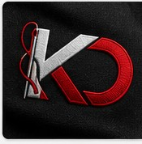
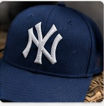
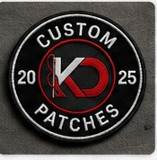
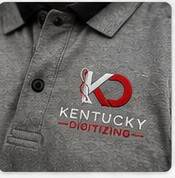
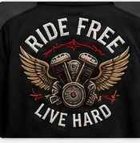
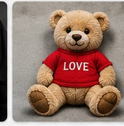

Swap these placeholders for your own finished photos once you're ready to launch — each tile is tagged by placement so it's easy to filter.









Your first order is digitized free so you can judge the work firsthand.